KSSingleCell19
Keystone Single Cell 2019
2019-07-12 15:25:23
Parameters
| Parameter | Value |
|---|---|
| hashtag | #KKSSingleCell |
| start_day | 2019-01-13 |
| end_day | 2019-01-17 |
| timezone | America/Denver |
| theme | theme_light |
| accent | #0d204a |
| accent2 | #868FA4 |
| kcore | 2 |
| topics_k | 6 |
| bigram_filter | 3 |
| fixed | TRUE |
| seed | 1 |
1 Introduction
An analysis of tweets from the #KKSSingleCell hashtag for the Keystone Symposia Single Cell Biology conference, 13-17 January 2019 at the Beaver Run Resort, Breckenridge, Colorado USA.
A total of 647 tweets from 300 users were collected using the rtweet R package.
2 Timeline
2.1 Tweets by day
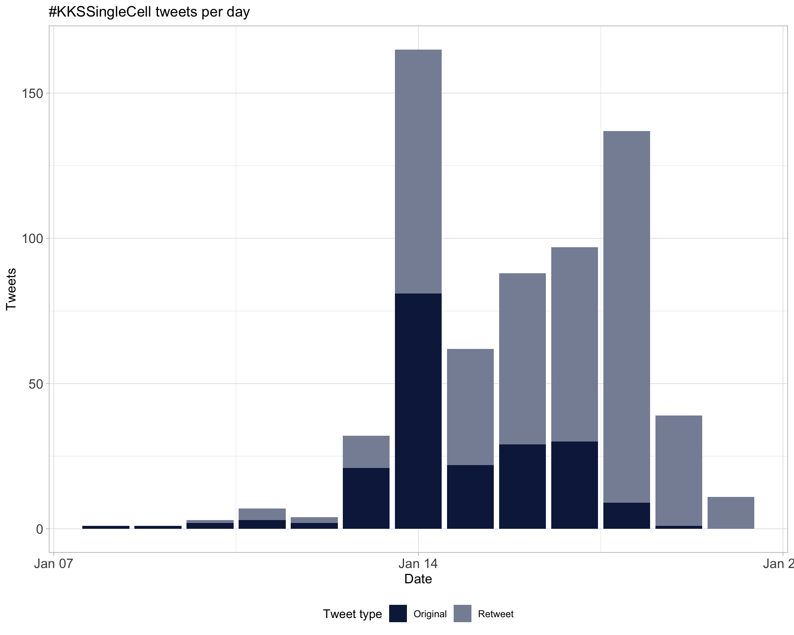
2.2 Tweets by day and time
Filtered for dates 2019-01-13 - 2019-01-17 in the America/Denver timezone.
3 Users
3.1 Top tweeters
Overall
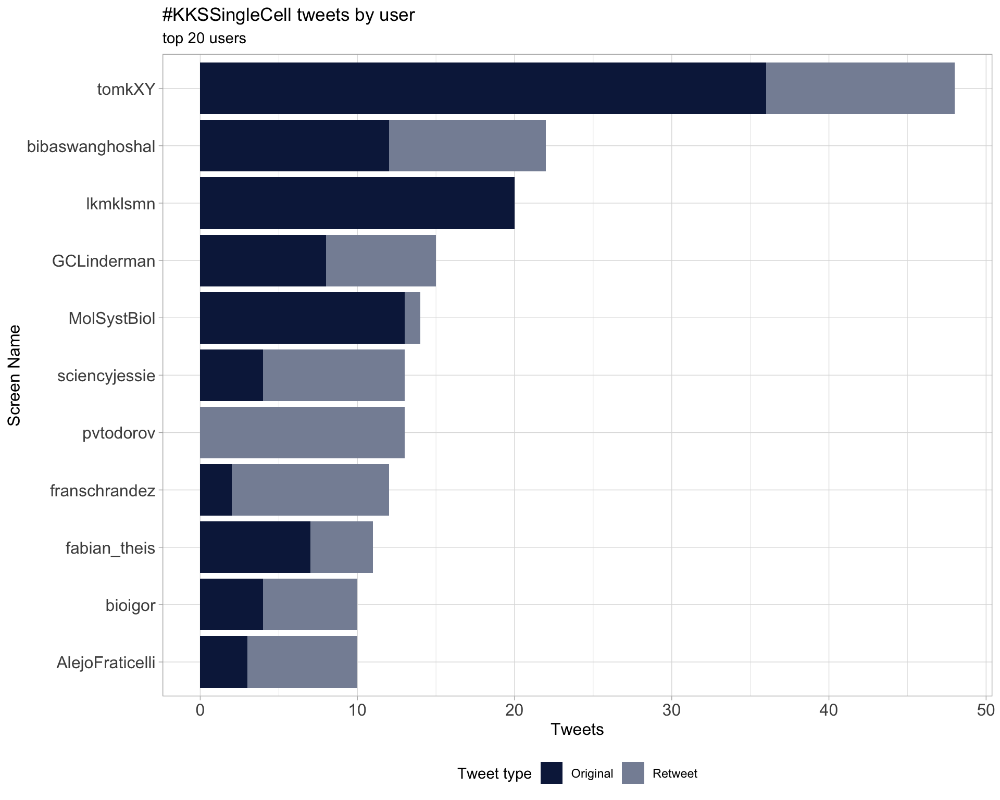
Original
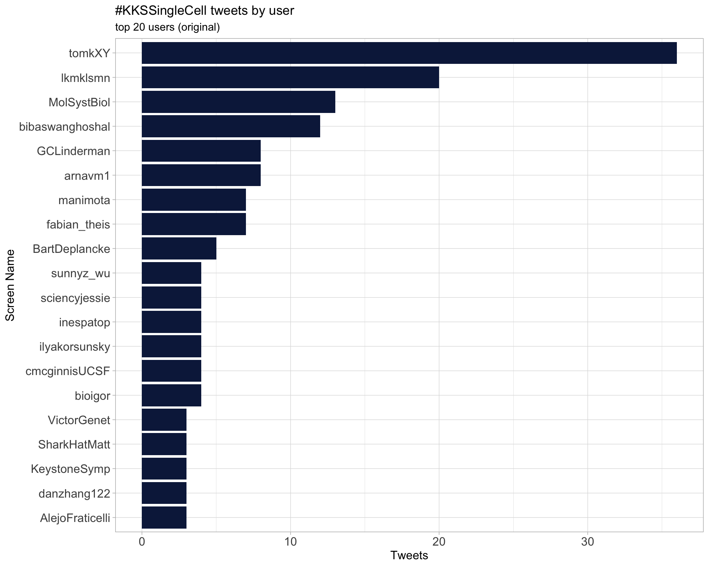
Retweets
3.2 Retweet proportion
3.3 Top tweeters timeline
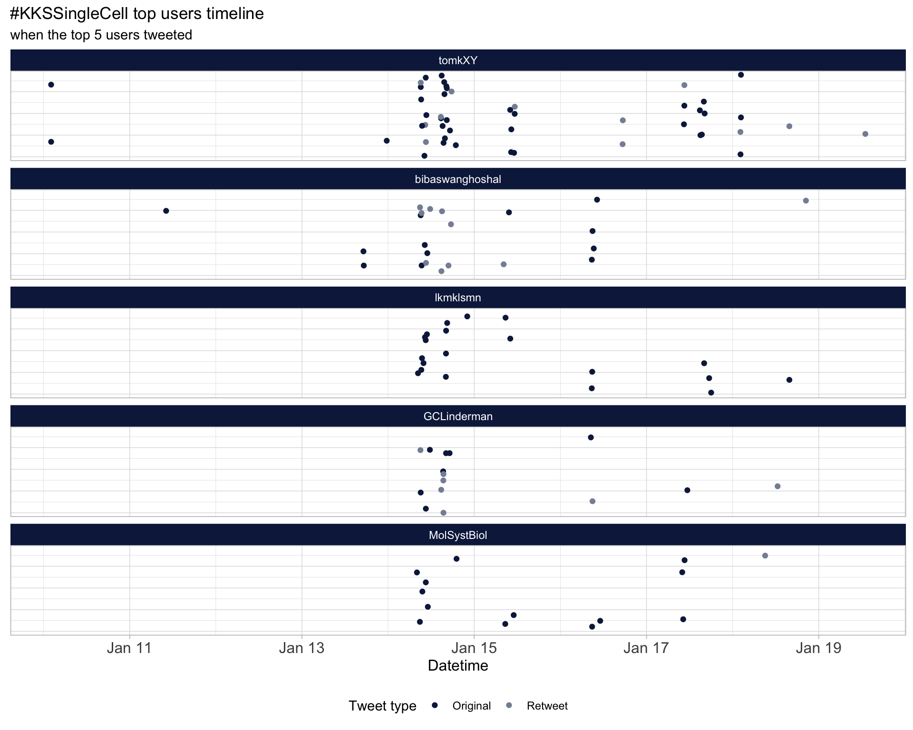
3.4 Top tweeters by day
Overall
Day 1
Day 2
Day 3
Day 4
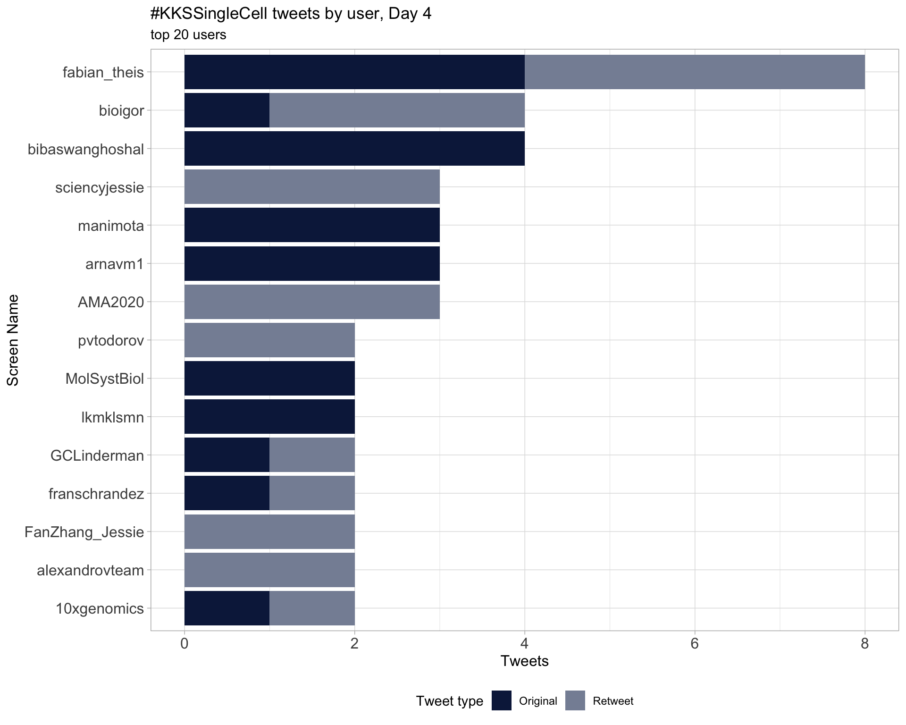
Day 5
Original
Day 1
Day 2
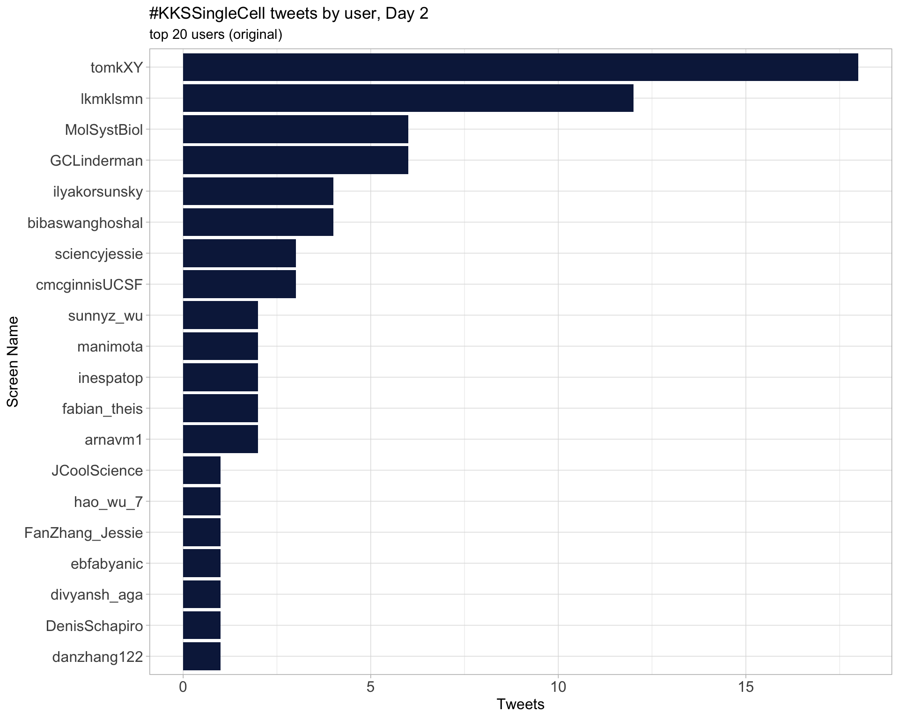
Day 3
Day 4
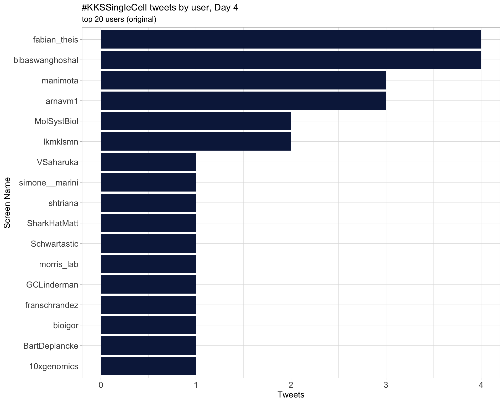
Day 5
Retweets
Day 1
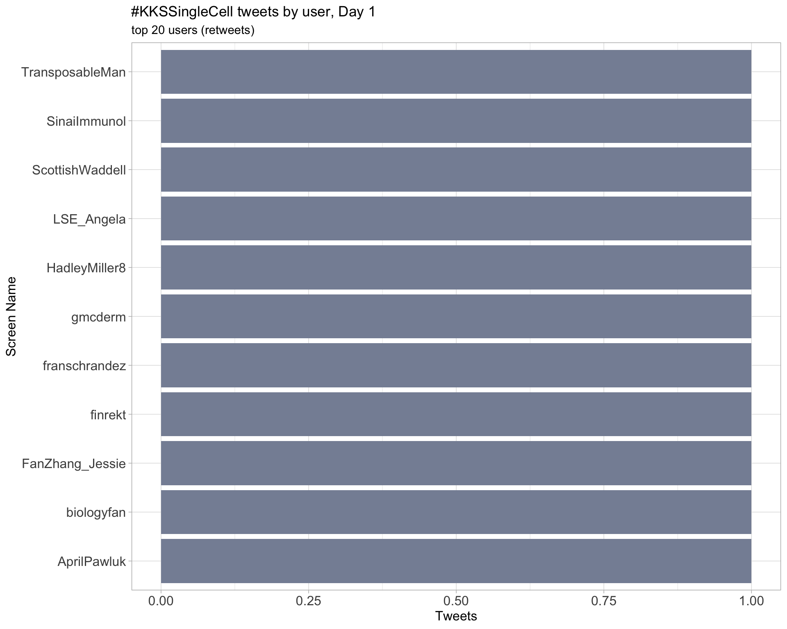
Day 2
Day 3

Day 4
Day 5
4 Sources
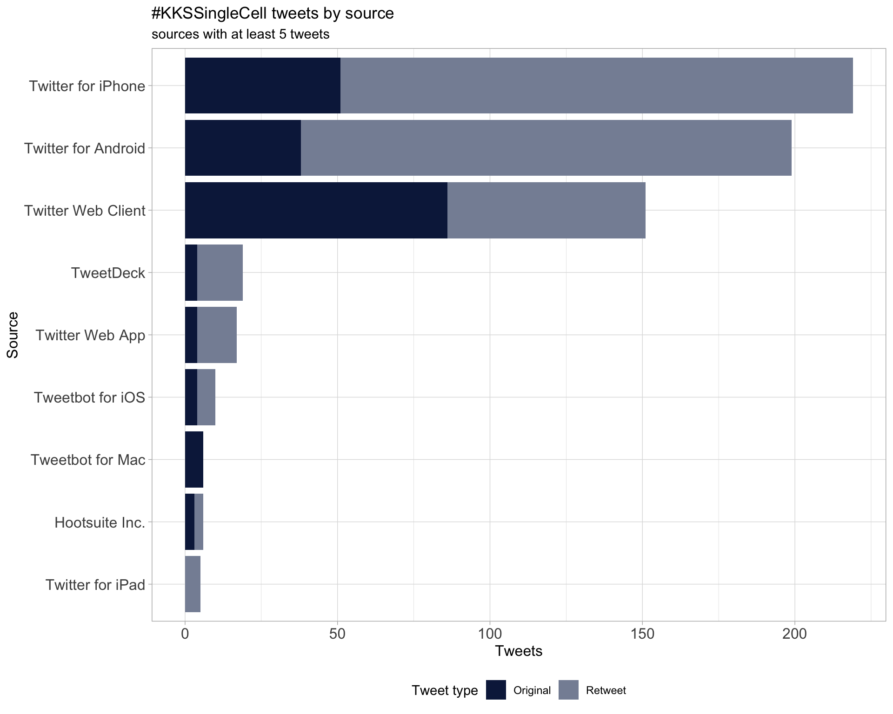
5 Networks
5.1 Replies
The “replies network”, composed from users who reply directly to one another, coloured by PageRank.
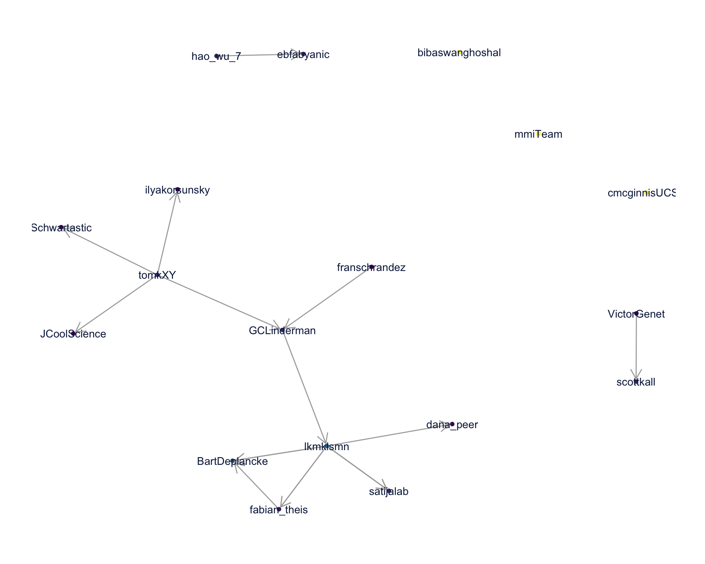
5.2 Mentions
The “mentions network”, where users mention other users in their tweets. Filtered for a k-core of 2. Node colour and size adjusted according to PageRank score.
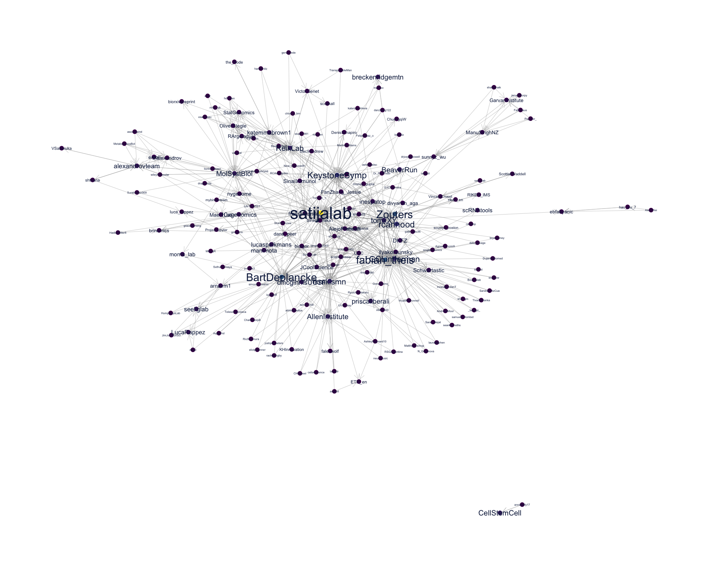
6 Tweet types
6.1 Retweets
Proportion
Count
Top 10
| screen_name | text | retweet_count |
|---|---|---|
| satijalab | Takeaways from amazing #KSsinglecell: 1. Spatial technologies are mature, and are tremendously exciting 2. Integrating scRNA-seq data with cell morphology, location, and functional readouts is key for interpretation 3. Single cell genomics is transforming developmental biology | 126 |
| GCLinderman | Starting off the Single Cell Computational Biology session of the #KSSingleCell conference with a talk by @fabian_theis, “Modeling Differentiation and Stimulation Response in Single-Cell Genomics.” The five methods below were presented. | 21 |
| lkmklsmn | @BartDeplancke stuns the audience by introducing Live-Seq: Profiling single cell RNA WITHOUT(!!!) killing the cell. #KSsinglecell | 18 |
| tomkXY | How do we know if difference between samples are batch effects of biological differences? Have to agree with @satijalab: biological replicates are more important than numbers of cells. #KSsinglecell | 12 |
| BartDeplancke | Lots of great talks first day of #KSsinglecell (massive data sets, exciting new analyses), but Allon Klein’s BioRxiv paper (https://t.co/t6xkBEJ5XH) on fate prediction seems like a must read and very much liked the elegant lineage tracing work by @morris_lab using CellTag (1/2) | 11 |
| AlejoFraticelli | #KSsinglecell Keystone Single Cell Biology 2019 was a blast! My recap: 1) scRNAseq increasingly combined with other single cell technologies 2) scProteomics is almost here 3) scOmics data integration 4) We have a data storage problem 5) Visualization tools need much improvement | 10 |
| franschrandez |
Excited to be going to @KeystoneSymp and presenting Clustergrammer2 Jupyter widget at poster #1058 @SinaiImmunol @10xgenomics @ProjectJupyter @mybinderteam #KSsinglecell #scRNAseq #regl #webgl #python view notebook: https://t.co/X4XvJdFMRv run notebook: https://t.co/oB2Kfynwqe https://t.co/NQ7hiCvlUp |
9 |
| rcannood | The presentation by @Zouters and me is available at https://t.co/YHT4lFf4Nn #KSsinglecell An older version of the benchmark is available at https://t.co/T13GUw3yhm, but an updated version will be available very soon! | 9 |
| inespatop | Great talk by @fabian_theis. They are creating amazing tools for #singlecell. Some of them already used by some friends in this paper: https://t.co/8ITRWp8IPD. Go check them https://t.co/gYz4ogHxAL. #KSsinglecell | 8 |
| manimota | I’ll be presenting our study of molecular pathology in ALS tonight (poster 3004) at #KSsinglecell. In it we use Spatial Transcriptomics (now part of ⁦@10xgenomics⁩) to profile expression in ~1300 mouse tissue sections and 80 PM sections. Stop by! https://t.co/DI7mEtLqjh | 7 |
Most retweeted
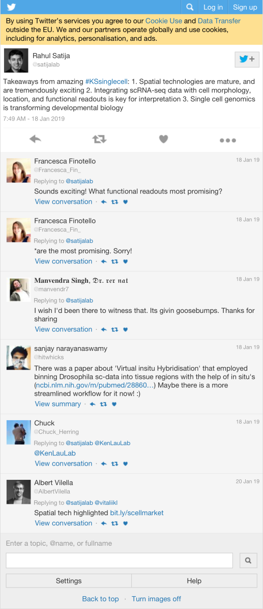
6.2 Likes
Proportion
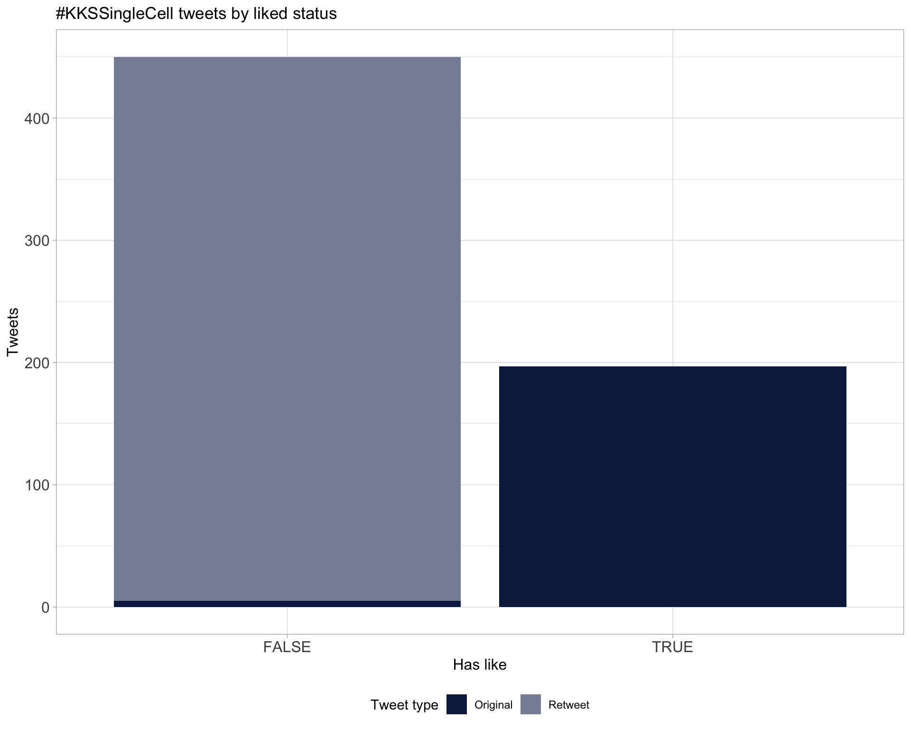
Count
Top 10
| screen_name | text | favorite_count |
|---|---|---|
| satijalab | Takeaways from amazing #KSsinglecell: 1. Spatial technologies are mature, and are tremendously exciting 2. Integrating scRNA-seq data with cell morphology, location, and functional readouts is key for interpretation 3. Single cell genomics is transforming developmental biology | 352 |
| fabian_theis | Excited to talk at the Keystone meeting on Single Cell Biology (hosted by Bertie Göttgens and Timm Schroeder) starting now @Breckenridge. 400 people, fully booked, wow. #KSsinglecell | 50 |
| GCLinderman | Starting off the Single Cell Computational Biology session of the #KSSingleCell conference with a talk by @fabian_theis, “Modeling Differentiation and Stimulation Response in Single-Cell Genomics.” The five methods below were presented. | 49 |
| franschrandez |
Excited to be going to @KeystoneSymp and presenting Clustergrammer2 Jupyter widget at poster #1058 @SinaiImmunol @10xgenomics @ProjectJupyter @mybinderteam #KSsinglecell #scRNAseq #regl #webgl #python view notebook: https://t.co/X4XvJdFMRv run notebook: https://t.co/oB2Kfynwqe https://t.co/NQ7hiCvlUp |
46 |
| tomkXY | How do we know if difference between samples are batch effects of biological differences? Have to agree with @satijalab: biological replicates are more important than numbers of cells. #KSsinglecell | 41 |
| lkmklsmn | @BartDeplancke stuns the audience by introducing Live-Seq: Profiling single cell RNA WITHOUT(!!!) killing the cell. #KSsinglecell | 40 |
| BartDeplancke | Lots of great talks first day of #KSsinglecell (massive data sets, exciting new analyses), but Allon Klein’s BioRxiv paper (https://t.co/t6xkBEJ5XH) on fate prediction seems like a must read and very much liked the elegant lineage tracing work by @morris_lab using CellTag (1/2) | 39 |
| AlejoFraticelli | #KSsinglecell Keystone Single Cell Biology 2019 was a blast! My recap: 1) scRNAseq increasingly combined with other single cell technologies 2) scProteomics is almost here 3) scOmics data integration 4) We have a data storage problem 5) Visualization tools need much improvement | 36 |
| sunnyz_wu | RAGE-SEQ at #KSsinglecell ! @ManuSinghNZ from @GarvanInstitute describing a powerful scRNA-Seq + targeted long read seq approach with many applications in tumour immunology. https://t.co/yADHoTGeSP | 35 |
| fabian_theis | Mind-blowing talk by @priscaliberali at #KSsinglecell measuring >500k intestinal organoids and quantifying heterogeneity during their development - amongst others using pseudotemporal ordering, originally developed for single-cell data. | 34 |
Most likes
6.3 Quotes
Proportion
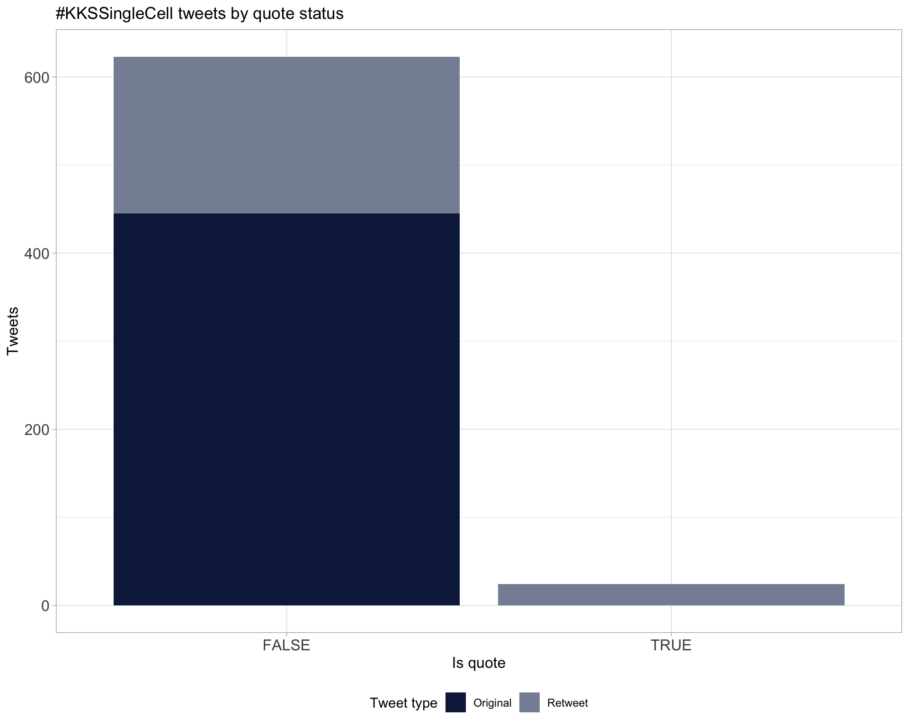
Count
Top 10
| screen_name | text | quote_count |
|---|---|---|
| tomkXY | Great work on benchmarking #singlecell trajectory methods. Discussed by @Zouters and @rcannood at #KSsinglecell. Great to see a collaborative effort including New Zealand researchers @ppgardne. https://t.co/PWjgstru7n | 3 |
| sciencyjessie | Great and usefull tool to explore methods to infer trajecories from for example scRNA-seq data. Great presentation by @Zouters and @rcannood at #KSsinglecell ! https://t.co/0U83og208i | 3 |
| GCLinderman | There are >75 (!!!) methods for trajectory inference in scRNA-seq data. Great talk by @rcannood at #KSsinglecell on their excellent work comparing methods. Benchmarking existing methods can be tedious, but it is utterly crucial for practitioners who have no idea what to use. https://t.co/p4BgDi34oH | 3 |
| tomkXY | Interesting and fast solution for batch effect correction: Harmony. @ilyakorsunsky and @soumya_boston at #KSsinglecell. Compatible with Seurat #singlecell analysis workflows. https://t.co/oqiz26pa6f | 2 |
| GCLinderman | Highly scalable method for correction of batch effect, based on soft clustering. 500,000 cells in about an hour. Great talk at #KSSingleCell by @ilyakorsunsky! There’s been a great emphasis methods addressing the problem of dataset integration at this conference. https://t.co/AaOXcTfww9 | 2 |
| tomkXY | Great to hear about latest developments from @ReikLab at #KSsinglecell. Using the #epigenetic landscape applied at the #singlecell level has great potential towards a deeper understanding of developmental biology. https://t.co/b4heZEWpnX | 2 |
| VictorGenet | Amazing method and results from the @ReikLab presented today at the #KSsinglecell scNMTseq = RNAseq + DNAmethylome + Chromatin accessibility üò≤ I‚Äôd love to try that with neuron differentiation !!! https://t.co/0ZGiOxC1LC | 2 |
| tomkXY | A conservative approach to imputing drop outs in #singlecell data: Adaptively-thresholded Low-Rank Approximation (ALRA). #KSsinglecell https://t.co/vztobWqxKB | 1 |
| tomkXY | Really interested to try scvelo for stochastic RNA velocity as discussed by @fabian_theis at #KSsinglecell. Looks very powerful for lineage analysis in #scRNAseq. Could account for some unexpected results we’ve had using velocyto in our data. https://t.co/3pLCjkZRvO | 1 |
| tomkXY | Cool stuff from @ManuSinghNZ at #KSsinglecell. #RAGESeq: antigen receptor profiles by targeted full-length #scRNASeq with @nanopore sequencing. Highly accurate and cost-effective profiling of BCR and TCR sequences. https://t.co/7RNPOc4bN3 | 1 |
Most quoted
7 Media
Proportion
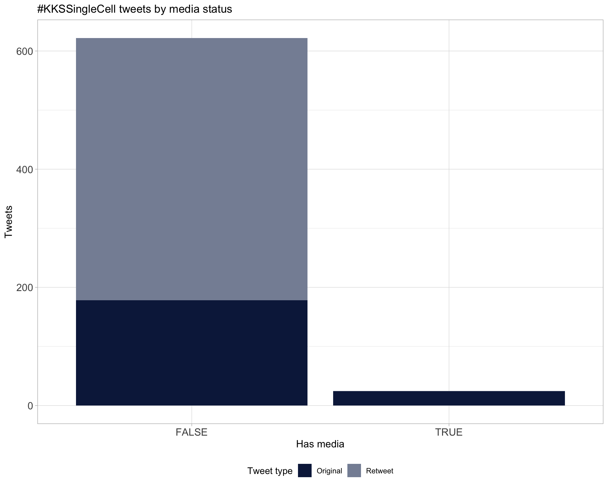
Top 10
| screen_name | text | favorite_count |
|---|---|---|
| franschrandez |
Excited to be going to @KeystoneSymp and presenting Clustergrammer2 Jupyter widget at poster #1058 @SinaiImmunol @10xgenomics @ProjectJupyter @mybinderteam #KSsinglecell #scRNAseq #regl #webgl #python view notebook: https://t.co/X4XvJdFMRv run notebook: https://t.co/oB2Kfynwqe https://t.co/NQ7hiCvlUp |
46 |
| sunnyz_wu | RAGE-SEQ at #KSsinglecell ! @ManuSinghNZ from @GarvanInstitute describing a powerful scRNA-Seq + targeted long read seq approach with many applications in tumour immunology. https://t.co/yADHoTGeSP | 35 |
| RongxinFang | Finished my first keystone presentation #KSSingleCell present SnapATAC for the first time. Now it’s time for skiing! #singlecell #atacseq https://t.co/wXqsmYnz9d | 26 |
| VincentCroset | Warming up (or cooling down?) for #KSsinglecell with @ScottishWaddell #FFP and Charlie Treiber. Looking forward to a nice conference in sunny #Breckenridge #Colorado https://t.co/UfVXIifbGQ | 22 |
| 10xgenomics | We’re enjoying the Keystone Single Cell conference this week. Stop by our table or visit our Poster #3011, High Throughput Immune Profiling Using Integrated Single Cell Multi-omics Analyses. #KSsinglecell https://t.co/VRNiCvznyb | 17 |
| MaehrLab | Looking forward to a great conference on Single Cell Biology. Scientific talks will start tomorrow. For now: View from my room #KSsinglecell @KeystoneSymp üëç https://t.co/LfbnBFsFIL | 17 |
| ebfabyanic | Really happy to be here at #KSSingleCell 2019 in Breckenridge! I‚Äôm going to be giving a poster tonight (poster number 1054), and on Thursday, I‚Äôll be giving a short talk during the ‚ÄúNovel Single Cell Technologies‚Äù workshop. Please stop by! I appreciate any and all feedback! üߨ https://t.co/QXh4Zd31gd | 17 |
| sunnyz_wu | Poppin my @KeystoneSymp cherry this week at #KSsinglecell ! Abstracts this year look amazing. Come check out poster 4047 on thurs to see our groups work on breast cancer heterogeneity ! (In between the slopes) https://t.co/8uEgIyjTVB | 13 |
| money_gupta | Country count for single cell 2019, some interesting stats!! @KeystoneSymp #KSsinglecell https://t.co/7Lj8gaNgAb | 12 |
| AlejoFraticelli | Best breckenridge 2 am food ever. #KSsinglecell https://t.co/JZ3YMFU88T | 11 |
7.1 Most liked image

8 Tweet text
8.1 Word cloud
The top 100 words used 3 or more times.
8.2 Bigram graph
Words that were tweeted next to each other at least 3 times.
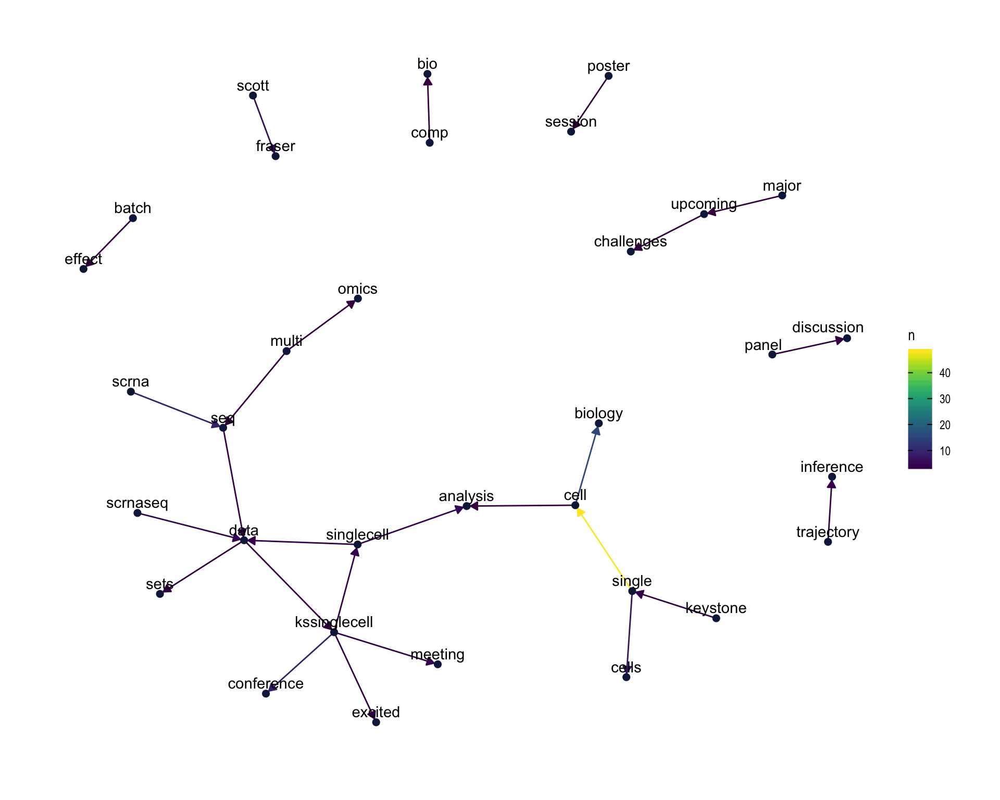
8.3 Topic modelling
Top 10 words associated with 6 topics identified by LDA.
8.3.1 Representative tweets
Most representative tweets for each topic
Topic 1
| screen_name | text | gamma |
|---|---|---|
| satijalab | Takeaways from amazing #KSsinglecell: 1. Spatial technologies are mature, and are tremendously exciting 2. Integrating scRNA-seq data with cell morphology, location, and functional readouts is key for interpretation 3. Single cell genomics is transforming developmental biology | 0.9954982 |
| tomkXY | Great to see @MasahiroUeda13 @SingleMolBio our colleague from @BDR_RIKEN from Osaka, Japan present on live-cell imaging at #KSsinglecell. Non-invasive techniques for #singlecell analysis are essential to understand cell biology. 頑張って上田先生。お疲れ様です。 | 0.9954982 |
| lkmklsmn | Whats the diff between cell type and state? Hongkui Zeng from @AllenInstitute studies (dis-)continuous variation in scRNAseq. Adding modalities (morphology) improves ability to make the distinction. Common theme at #KSsinglecell: Go beyond transcriptome to understand a cell! | 0.9953117 |
| bioigor | RAGE-seq: targeted long-read sequencing with short-read based transcriptome profiling to characterize full-length T cell (TCR) and B cell (BCR) receptor sequences and transcriptional profiles #KSSingleCell https://t.co/5k0SQHCWlI | 0.9948881 |
| GCLinderman | Highly scalable method for correction of batch effect, based on soft clustering. 500,000 cells in about an hour. Great talk at #KSSingleCell by @ilyakorsunsky! There’s been a great emphasis methods addressing the problem of dataset integration at this conference. https://t.co/AaOXcTfww9 | 0.9946462 |
| fabian_theis | Great talk at #KSsinglecell by Thomas Höfer @DKFZ, showing how to integrate barcodes into models of population dynamics. Super-interesting to combine with molecular readouts from scRNAseq, since many effects are seen as shifts of cell numbers per cell type cluster. | 0.9946462 |
| tomkXY | Cool stuff from @ManuSinghNZ at #KSsinglecell. #RAGESeq: antigen receptor profiles by targeted full-length #scRNASeq with @nanopore sequencing. Highly accurate and cost-effective profiling of BCR and TCR sequences. https://t.co/7RNPOc4bN3 | 0.9946462 |
| tomkXY | Lots of progress in #singlecell #epigenomics at #KSsinglecell. Bisulfate treatment and ACE-Seq enables accurate 5hmC sequencing. @ebfabyanic and colleagues at Penn State are optimising for single cell analysis. #epigenetics https://t.co/p99K96wdxY | 0.9946462 |
| lkmklsmn | Amazing talks, great scientific intx. Personal takeaway: Computation & tech, really drive the field. Go beyond single modality/omic & come up w creative perturbations. And the view wasnt so bad either. #KSsinglecell https://t.co/3lowmmWVYi | 0.9943803 |
| franschrandez |
Excited to be going to @KeystoneSymp and presenting Clustergrammer2 Jupyter widget at poster #1058 @SinaiImmunol @10xgenomics @ProjectJupyter @mybinderteam #KSsinglecell #scRNAseq #regl #webgl #python view notebook: https://t.co/X4XvJdFMRv run notebook: https://t.co/oB2Kfynwqe https://t.co/NQ7hiCvlUp |
0.9940867 |
Topic 2
| screen_name | text | gamma |
|---|---|---|
| BartDeplancke | Third #KSsinglecell recap: @seeliglab democratizes Split-seq with kit production, @LucaRappez >100 metabolite detection across 4k single cells, astonishing imaging by @AllenInstitute with great GFP-tagged iPSC line resource, joint scRNAseq & TF binding assay (Rob Mitra lab) | 0.9963657 |
| BartDeplancke | Final #KSsinglecell day recap: beautiful work by the Wold & Reik labs on enhancer dynamics during limb development & gastrulation respectively, lipid-tagged indices by @cmcginnisUCSF for single cell multiplexing looks powerful, new probablistic cell tracker by Spencer lab 1/2 | 0.9954982 |
| GCLinderman | Great talk/poster at #KSsinglecell. They use “matrix-free spectral clustering” which avoids forming the Laplacian: the left singular vectors of a row-normalized matrix correspond to the eigenvectors of the Laplacian defined using cosine similarity between all points. https://t.co/hP5K7KMYQh | 0.9951090 |
| BartDeplancke | 2/2 Other #KSsinglecell highlights (subjective): STARsolo (10X faster mapper than Cell Ranger), Nichenet to model intercellular communication (https://t.co/1rgRRXEnCM) and Dynbenchmark @woutersaelens - comparing dozens of sc trajectory inference methods https://t.co/PdVQSGfVyw | 0.9951090 |
| GCLinderman | There are >75 (!!!) methods for trajectory inference in scRNA-seq data. Great talk by @rcannood at #KSsinglecell on their excellent work comparing methods. Benchmarking existing methods can be tedious, but it is utterly crucial for practitioners who have no idea what to use. https://t.co/p4BgDi34oH | 0.9946462 |
| lkmklsmn | @dana_peer: “Cell fates can be modeled using markov chains to describe probabilities of cells ending up in terminal states.” Nice way to identify key regulators: Just associate gene expression with these probabilities. Prob better than using pseudotime(?) #KSsinglecell | 0.9946462 |
| lkmklsmn | Comp Bio Open panel discussion: What are the major upcoming challenges? @dana_peer: More mechanistic modeling by integrating additional data (ie. space, time) & understanding of technical and biological noise/signal #KSsinglecell | 0.9946462 |
| bibaswanghoshal | The view from the window! Excited for the Keystone Conference starting tomorrow here @beaverrunresort! #KSsinglecell #conference #snow #rockies #travelgram #traveldiaries2019 #breckenridge #mountains #snowymountains #viewfrommywindow https://t.co/HiMmhMEKWX https://t.co/RyhQ0hN5L1 | 0.9943803 |
| lkmklsmn | @satijalab: Data integration across modalities (scRNAseq, scATACseq, imaging) identifies subtle cellular phenotypes not observed using a single modality. Potentially necessary to capture true full biology of single cells? #KSsinglecell | 0.9943803 |
| MolSystBiol | .@fabian_theis @HelmholtzMucEn Applying generative models to scRNA-seq data: scGEn predicts single-cell perturbation effects for unseen phenotypes (https://t.co/7mq7gYZfur) Quite promising method! #KSSinglecell | 0.9940867 |
Topic 3
| screen_name | text | gamma |
|---|---|---|
| tomkXY |
Tracking proteolysis in live single cells using a fluorescent timer from @davidsuter_epfl at #KSsinglecell. Degradation of proteins pauses in mitosis. Half-lives of proteins co-vary within cells. Protein degradation and synthesis rates correlate in cells. https://t.co/REPbd4zo5v |
0.9954982 |
| shr9st9 | Going to @KeystoneSymp next week for #KSsinglecell conference. Excited to learn new developments on #scRNAseq. I’m at poster 4001, poster session 4, January 17. Stop by to learn single cell biology of human pancreatic islets. #singlecell #Brekenridge #Colorado | 0.9948881 |
| fabian_theis | Rick Horwitz now talking at #KSsinglecell on large team-based effort of the @AllenInstitute for Cell Science. Last year they went through a “computational tool building phase - next year comes the fun”. Hey, we comp people have fun, too. You should hear our jokes. | 0.9946462 |
| 10xgenomics | We’re enjoying the Keystone Single Cell conference this week. Stop by our table or visit our Poster #3011, High Throughput Immune Profiling Using Integrated Single Cell Multi-omics Analyses. #KSsinglecell https://t.co/VRNiCvznyb | 0.9946462 |
| tomkXY | Great first day at #KSsinglecell. Proud to be here to represent Japan and @riken_en. Looking forward to great Science tomorrow. Enjoying my first @KeystoneSymp meeting so far. Stunning clear skies in Colorado. Hope to meet more talented scientists and learn new tricks this week. | 0.9946462 |
| BartDeplancke | Lots of great talks first day of #KSsinglecell (massive data sets, exciting new analyses), but Allon Klein’s BioRxiv paper (https://t.co/t6xkBEJ5XH) on fate prediction seems like a must read and very much liked the elegant lineage tracing work by @morris_lab using CellTag (1/2) | 0.9946462 |
| sciencyjessie | Excited to hear great science and talk science at #KSsinglecell meeting in Breckenridge Colorado. Want to know more about immuno-detection by sequencing for intracellular phosphoprotein measurements and how to couple Abs to DNA tags, come and see me at poster 4027 | 0.9943803 |
| arnavm1 | During one of the talks at #KSsinglecell, someone (can‚Äôt remember who-sorry! üò≥) mentioned RFP toxicity. Reminded me of this paper (https://t.co/HtnCunOupO) by David Piston‚Äôs lab evaluating toxicity of basically every known FP. Spoiler alert: GFP wins. | 0.9943803 |
| stchlk | Airline lost my poster in Denver. Took evasive action. Excited to be attending #KSsinglecell with poster copy number two. Ready to learn about exciting developments in single cell biology esp. bioinformatics | 0.9943803 |
| MolSystBiol | .@MaehrLab CRISPRi-perturbation screen with scRNA-seq readout for analysing loss-of-function phenotypes of candidate regulators. New insights into regulation of human endoderm development #KSSinglecell #singlecell #CRISPR | 0.9943803 |
Topic 4
| screen_name | text | gamma |
|---|---|---|
| JCoolScience | Day 2 of #KSsinglecell off to a fast start. @lucaspelkmans kicked it off with a tour de force overview of 4i technology across biological scales. Ellen Rothenberg followed up with a beautiful dissection of T-cell differentiation mechanisms using single cell methods. | 0.9953117 |
| GCLinderman | Stephen Quake at #KSSingleCell discusses an application of scRNA-seq for drug development: Cell atlases like Tabula Muris provide a resource to identify which tissues or cell types a potential drug target is expressed in. | 0.9951090 |
| lkmklsmn | @BartDeplancke and his Techno team improve efficiency of droplet based scRNAseq using DisCo (deterministic co-encapsulation): Avoid incomplete droplets to increase cell capture efficiency and optimize bead recovery. https://t.co/jawQ2GbUlH Quite promising! #KSsinglecell | 0.9951090 |
| MolSystBiol | .@dana_peer Continuous view of #CellFate: modelling differentiation using Markov chains, defining for each cell the probability of reaching each terminal state. Application to mouse endoderm #SingleCell transcriptomes reveals unappreciated lineage relationships #KSSinglecell | 0.9951090 |
| manimota | Great talk on SPLIT-seq this morning at #KSsinglecell by @seeliglab. The power of this technique to democratize scRNAseq and improve experimental design via cost reduction is huge, but method has other technical perks too. We used their mouse data in our ALS study. Thanks! | 0.9951090 |
| MolSystBiol | Beautiful talk by @ReikLab: #singlecell triple-omics (chromatin accessibility, DNA methylation, RNA expression) &analyses with Multi­Omics Factor Analysis (https://t.co/3Qc7QCeqGF) show that during gastrulation lineages are defined by a hierarchical epigenetic model #KSSinglecell | 0.9951090 |
| bibaswanghoshal | The concept of gene regulation and causal inference is exciting! Soft interventions or knockdowns provide similar information on causal inference as the hard interventions or knockouts gives a different perspective to look at gene regulatory networks! #KSsinglecell | 0.9948881 |
| tomkXY | Understanding spatial organisation of the genome is critical to decipher mechanisms and gene regulatory networks. Huge potential to apply mathematical models at the #singlecell resolution. Great talk from Caroline Uhler (MIT) #KSsinglecell | 0.9948881 |
| BartDeplancke | With some delay: day 2 #KSsinglecell standouts (subjective!): the theme of cyclic immunofluorescence (4i (Gut et al., Science 2018; @lucaspelkmans ) with great application on intestinal organoids / superb imaging @priscaliberali & Immuno-SABER https://t.co/1JdoIAtC2A | 0.9946462 |
| lkmklsmn | Fascinating work from Barbara Treutlein from @ETH_en. scRNAseq profiles of developing and regenerating axolotl limbs show striking similarity. Multipotent blastema cells drive regeneration. Great system & study design! #KSsinglecell | 0.9946462 |
Topic 5
| screen_name | text | gamma |
|---|---|---|
| lkmklsmn | Caroline Uhler shows off nice trick to ‘translate’ scRNAseq methodology (optimal transport (OT)) into imaging: Apply OT algorithm in latent space derived from variational autoencoder to overcome coordinate system inconsistency in imaging data #KSsinglecell | 0.9956704 |
| MolSystBiol | Amazing talk by @lucaspelkmans on crossing spatial scales using 4i (Iterative Indirect Immunofluorescence Imaging)! Subcellular spatial protein distribution in single cells provides another level of info on cellular states #KSSinglecell @SystemsXch @UZH_en | 0.9951090 |
| lkmklsmn | Fascinating talk by Lucas Pelkmans about multiplexed protein maps, a way to image cells with subcellular resolution using common but unique multiplexed pixel profiles, https://t.co/ArfHjf1avy. I wonder how much more info this “dimension” will give to scRNAseq data #KSsinglecell | 0.9948881 |
| MolSystBiol | Great keynote by Scott Fraser on new approaches for multimodal-multiplex-multidimensional #imaging. Improving image/noise ratio, solving the “speed problem” & adding dimensions to imaging (time, gene, color, z) #KSSinglecell #microscopy | 0.9948881 |
| manimota | Beautiful work from the @AllenInstitute presented by Hongkui Zheng at #KSsinglecell tonight. Retro-seq, patch-seq, multiplexed FISH, etc. Great to see the the promised advances in understanding the brain via sequencing and imaging technologies delivered. https://t.co/crw5WtLgeJ | 0.9946462 |
| manimota | Very cool method (SpaceM) just presented by @luca_rappez at #KSsinglecell. By combining MALDI-IMS with imaging in a clever way, they are able to relate spatially resolves metabolite levels back to single cells and gain functional insight. Ideas percolating on how we could use it! | 0.9946462 |
| ebfabyanic | Really happy to be here at #KSSingleCell 2019 in Breckenridge! I‚Äôm going to be giving a poster tonight (poster number 1054), and on Thursday, I‚Äôll be giving a short talk during the ‚ÄúNovel Single Cell Technologies‚Äù workshop. Please stop by! I appreciate any and all feedback! üߨ https://t.co/QXh4Zd31gd | 0.9943803 |
| manimota | I’ll be presenting our study of molecular pathology in ALS tonight (poster 3004) at #KSsinglecell. In it we use Spatial Transcriptomics (now part of ⁦@10xgenomics⁩) to profile expression in ~1300 mouse tissue sections and 80 PM sections. Stop by! https://t.co/DI7mEtLqjh | 0.9943803 |
| MolSystBiol | L Rappez from @alexandrovteam @thalexandrov @embl SpaceM: method for in situ spatial single-cell #metabolomics, linking #singlecell metabolomes (MALDI analysis) with spatial and morphological features (microscopy &histology) #KSSinglecell | 0.9943803 |
| tomkXY | FLOW-MAP: a graph-based algorithm for #singlecell time course experiments with CyTOF or #scRNASeq. A graphical interface supports interaction with the data. Corey Williams (University of Virginia) #KSsinglecell | 0.9943803 |
| tomkXY | Quick plug for my poster tonight at #KSsinglecell. I think I might be the only one working on plants here. Still up for a chat about handling complex #scRNASeq data, comp methods, multi-omics, stem cells, other projects that we’re working on at @riken_en, and anything in between! https://t.co/2mRB1oxGQX | 0.9943803 |
Topic 6
| screen_name | text | gamma |
|---|---|---|
| AlejoFraticelli | #KSsinglecell Keystone Single Cell Biology 2019 was a blast! My recap: 1) scRNAseq increasingly combined with other single cell technologies 2) scProteomics is almost here 3) scOmics data integration 4) We have a data storage problem 5) Visualization tools need much improvement | 0.9948881 |
| FanZhang_Jessie | I will give a talk on “Integrating Bulk and Single-Cell Transcriptomics with Mass Cytometry Data to Define Inflammatory Cell States in Rheumatoid Arthritis” on session of “Extracting Information from High-dimensional Measurements” #KSsinglecell @KeystoneSymp. Ask me questions! | 0.9946462 |
| Schwartastic | Amazing talks and posters at #KSsinglecell! Excited to present TooManyCells poster today, #3057. TooManyCells is a program with a suite of tools including a new kind of visualization for cell clades! Check out the website at https://t.co/d3Zw8yXFpX and our bioRxiv paper! | 0.9943803 |
| AlejoFraticelli | Heading to Breckenridge, CO, for a wonderful Keystone symposium on Single Cell Biology. Excited to show our work on hematopoiesis at the single cell level!!!!!! #KSSingleCell #singlecell #HSCI #stemcell #hematology @KeystoneSymp | 0.9937606 |
| lkmklsmn | Packed, computational heavy first day of #KSsinglecell coming to an end. Great talks and posters all around, really enjoyed it. My personal, single sentence summary: Your scRNAseq method is as good as your control/benchmark. | 0.9933965 |
| cmcginnisUCSF | Awesome work on imputation in various forms and flavors from @satijalab and @fabian_theis – makes me wonder about the context-dependence. Is perturbation imputation accurate for PBMCs from different individuals? For NSG vs WT mice? #KSsinglecell | 0.9929872 |
| tomkXY | I would also add: users should pay attention to which assumptions have been made when designing each method. These differ considerably and should inform choice of methods as much as performance and results. Use the most appropriate method for your question. #KSsinglecell | 0.9929872 |
| bibaswanghoshal | Computational biology session right at the start of the conference! More and more conferences should follow suit! This is the driving force of Single Cell Biology #BioInformatics #scRNAseq #KSsinglecell | 0.9929872 |
| tomkXY | Decontx: a Bayesian method for correcting for background noise (floating RNA) in #singlecell data. Available as an R package. Shiyi Yang (Boston University) at #KSsinglecell | 0.9929872 |
| fabian_theis | Great keynote by Scott Fraser on new multimodal microscopy tools, speedup being a big topic. Although I have a hunch that his statement that “any time multiplied by 10^9 is a long time” may not hold. #KSsinglecell | 0.9925239 |
| lkmklsmn | Scott Fraser from @USC starting Single Cell Biology @KeystoneSymp with a good message: “Embrace dynamics/variance. It isnt noise, its signal.” #KSsinglecell | 0.9925239 |
| tomkXY | A conservative approach to imputing drop outs in #singlecell data: Adaptively-thresholded Low-Rank Approximation (ALRA). #KSsinglecell https://t.co/vztobWqxKB | 0.9925239 |
9 Software
Software mentioned in Tweets with links to GitHub, BitBucket, Bioconductor or CRAN.
| Name | Type | Link |
|---|---|---|
| celda | GitHub | https://github.com/campbio/celda |
| nichenetr | GitHub | https://github.com/browaeysrobin/nichenetr |
| scRNA-tools | GitHub | https://github.com/oshlack/scrna-tools |
| too-many-cells | GitHub | https://github.com/gregoryschwartz/too-many-cells |
Session info
## R version 3.6.0 (2019-04-26)
## Platform: x86_64-w64-mingw32/x64 (64-bit)
## Running under: Windows 10 x64 (build 17134)
##
## Matrix products: default
##
## locale:
## [1] LC_COLLATE=English_Australia.1252 LC_CTYPE=English_Australia.1252
## [3] LC_MONETARY=English_Australia.1252 LC_NUMERIC=C
## [5] LC_TIME=English_Australia.1252
##
## attached base packages:
## [1] stats graphics grDevices utils datasets methods base
##
## other attached packages:
## [1] fs_1.3.1 here_0.1 knitr_1.23
## [4] magick_2.0 webshot_0.5.1 viridis_0.5.1
## [7] viridisLite_0.3.0 wordcloud_2.6 RColorBrewer_1.1-2
## [10] ggraph_1.0.2 ggrepel_0.8.1 ggplot2_3.2.0
## [13] topicmodels_0.2-8 tidytext_0.2.1 igraph_1.2.4.1
## [16] stringr_1.4.0 purrr_0.3.2 forcats_0.4.0
## [19] lubridate_1.7.4 tidyr_0.8.3 dplyr_0.8.3
## [22] rtweet_0.6.9
##
## loaded via a namespace (and not attached):
## [1] httr_1.4.0 jsonlite_1.6 assertthat_0.2.1
## [4] askpass_1.1 highr_0.8 stats4_3.6.0
## [7] yaml_2.2.0 slam_0.1-45 pillar_1.4.2
## [10] backports_1.1.4 lattice_0.20-38 glue_1.3.1
## [13] digest_0.6.20 polyclip_1.10-0 colorspace_1.4-1
## [16] htmltools_0.3.6 Matrix_1.2-17 plyr_1.8.4
## [19] tm_0.7-6 pkgconfig_2.0.2 scales_1.0.0
## [22] processx_3.3.1 tweenr_1.0.1 ggforce_0.2.2
## [25] tibble_2.1.3 openssl_1.4 generics_0.0.2
## [28] farver_1.1.0 withr_2.1.2 lazyeval_0.2.2
## [31] cli_1.1.0 NLP_0.2-0 magrittr_1.5
## [34] crayon_1.3.4 evaluate_0.14 ps_1.3.0
## [37] tokenizers_0.2.1 janeaustenr_0.1.5 fansi_0.4.0
## [40] SnowballC_0.6.0 MASS_7.3-51.4 xml2_1.2.0
## [43] tools_3.6.0 munsell_0.5.0 callr_3.2.0
## [46] compiler_3.6.0 rlang_0.4.0 grid_3.6.0
## [49] labeling_0.3 rmarkdown_1.13 gtable_0.3.0
## [52] curl_3.3 reshape2_1.4.3 R6_2.4.0
## [55] gridExtra_2.3 zeallot_0.1.0 utf8_1.1.4
## [58] rprojroot_1.3-2 modeltools_0.2-22 stringi_1.4.3
## [61] parallel_3.6.0 Rcpp_1.0.1 vctrs_0.1.0
## [64] tidyselect_0.2.5 xfun_0.8